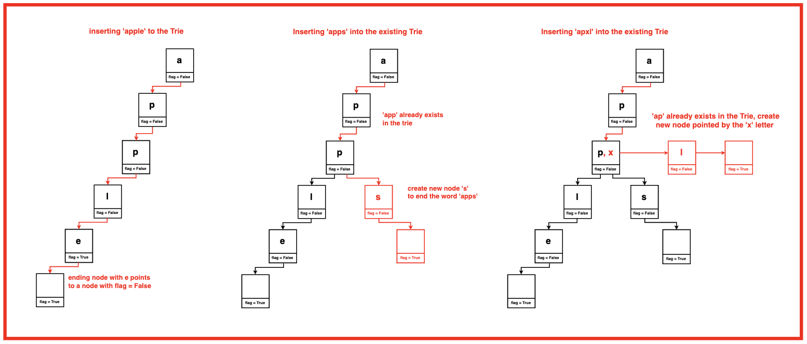
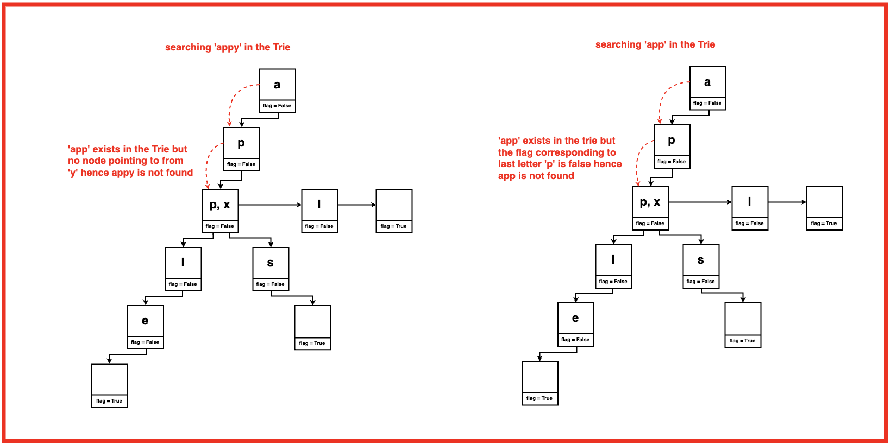
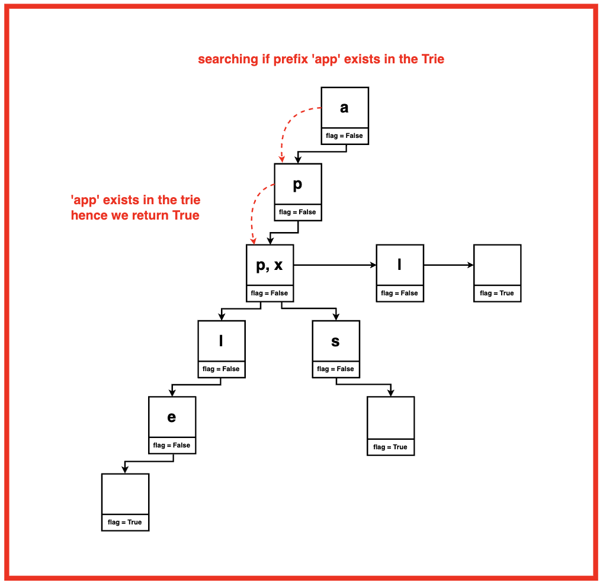
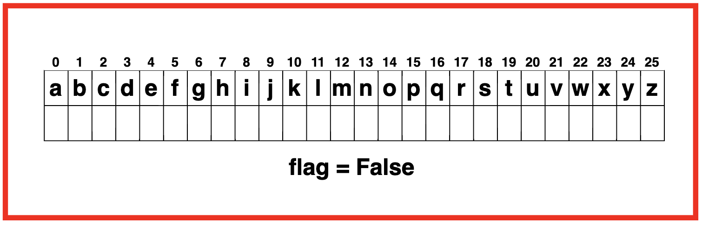
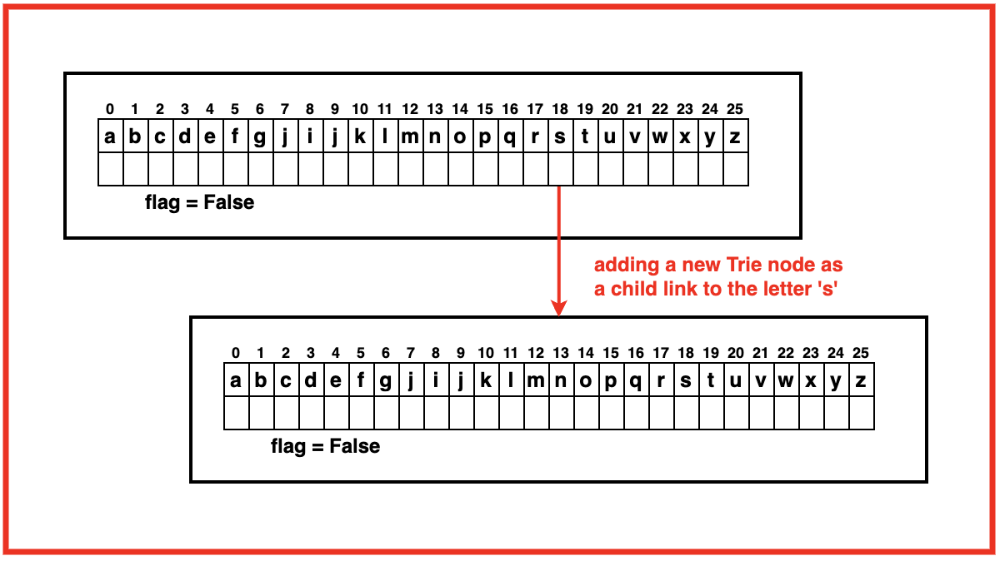
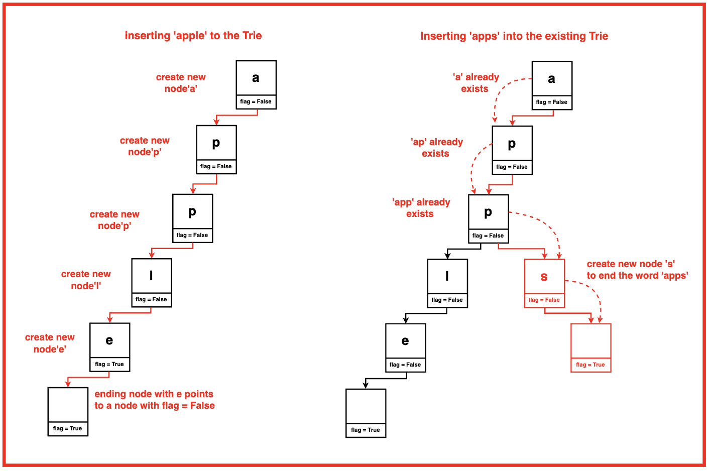

Problem Statement: Implement a Trie Data Structure which supports the following three operations:
Search (word): To check if the string `word` is present in the Trie or not.
Insert (word): To insert a string `word` in the Trie.
Start With(word): To check if there is a string that has the prefix `word`.
Trie is a data structure that is like a tree data structure in its organisation. It consists of nodes that store letters or alphabets of words, which can be added, retrieved, and deleted from it in a very efficient way.
In other words, Trie is an information retrieval data structure, which can beat naive data structures like Hashmap, Tree, etc in the time complexity of its operations.
Examples
Example 1:Input:Insert: ‘apple’, ‘apps’, ‘apxl’Search word: ‘app’, ‘appy’Search prefix: ‘app’Output: Inserted ‘apple’, Inserted ‘apps’,Inserted, ‘apxl’.Words ‘app’ and ‘appy’ do not exist in Trie.Prefix ‘app’ exists in the Trie.Explanation: Insert Operations: “apple”, “apps” and “apxl” are inserted. Search Operations: “appy”, “app”Search Prefix Operations: “app”
Disclaimer: Don’t jump directly to the solution, try it out
yourself first.
Optimal Approach
Algorithm / Intuition
The Trie data structure is used to efficiently store and retrieve a set of strings.
It organises strings such that common prefixes are shared among strings, making operations like searching for words with a given prefix efficient. Trie allows for quick retrieval of all strings with a given prefix, making it highly efficient for autocomplete and predictive text applications.
A Trie node is a data structure used to construct Trie. Each node contains the following components:
Links to Child Nodes: A Trie node contains an array of pointers called “links” or “pointer to children” for each letter of the lowercase alphabet.
These pointers represent connections to child nodes corresponding to each letter of the alphabet. For instance, the link at index 0 corresponds to the child node representing the letter 'a', the link at index 1 corresponds to 'b', and so forth.
Flag for End of Word: Each Trie node contains a boolean flag indicating whether the node marks the end of a word. This flag is essential for distinguishing between prefixes and complete words stored in the Trie.

Each node in the trie nodes support several operations:
Contains Key: This operation checks whether a specific letter (or key) exists as a child node of the current Trie node. It returns true if the letter is present, indicating a valid path in the Trie.
Get Child Node: Given a letter, this operation retrieves the corresponding child node of the current Trie node. If the letter is present, it returns the pointer to the child node; otherwise, it returns nullptr, signifying the absence of the letter.
Put Child Node: This operation establishes a connection between the current Trie node and a child node representing a particular letter. It sets the link at the corresponding index to point to the provided child node.
Set End Flag: Marks the current Trie node as the end of a word. This flag is crucial for determining whether a string stored in the Trie terminates at this node, indicating a complete word.
Is End of Word: Checks whether the current Trie node signifies the end of a word by examining the end flag. It returns true if the node marks the end of a word; otherwise, it returns false.

Algorithm 1: To Insert a Node in the Trie:
Step 1:Start at the root node.
Step 2: For each character in the word:
Check if the current node has a child node corresponding to the character.
If not, create a new node and link it as a child of the current node.
Move to the child node corresponding to the character.
Step 3:
Once all characters are inserted, mark the end of the word by setting the flag of the last node to true.

Algorithm 2: To Search for a word in the Trie:
Step 1:Start at the root node.
Step 2: For each character in the word:
Check if the current node has a child node corresponding to the character.
If not, the word is not in the Trie.
Move to the child node corresponding to the character.
Step 3:
After processing all characters, check if the flag of the last node is set to true. If yes, the word is found; otherwise, it is not.
Algorithm 3: Check if Trie contains prefix:
Step 1:Start at the root node.
Step 2: For each character in the prefix:
Check if the current node has a child node corresponding to the character.
If not, there is no word with the given prefix.
Move to the child node corresponding to the character.
Step 3:
If all characters of the prefix are found, return true indicating the existence of words with the given prefix.
Code
#include <iostream>
using namespace std;
// Node structure for Trie
struct Node {
// Array to store links to child nodes,
// each index represents a letter
Node* links[26];
// Flag indicating if the node
// marks the end of a word
bool flag = false;
// Check if the node contains
// a specific key (letter)
bool containsKey(char ch) {
return links[ch - 'a'] != NULL;
}
// Insert a new node with a specific
// key (letter) into the Trie
void put(char ch, Node* node) {
links[ch - 'a'] = node;
}
// Get the node with a specific
// key (letter) from the Trie
Node* get(char ch) {
return links[ch - 'a'];
}
// Set the current node
// as the end of a word
void setEnd() {
flag = true;
}
// Check if the current node
// marks the end of a word
bool isEnd() {
return flag;
}
};
// Trie class
class Trie {
private:
Node* root;
public:
// Constructor to initialize the
// Trie with an empty root node
Trie() {
root = new Node();
}
// Inserts a word into the Trie
// Time Complexity O(len), where len
// is the length of the word
void insert(string word) {
Node* node = root;
for (int i = 0; i < word.length(); i++) {
if (!node->containsKey(word[i])) {
// Create a new node for
// the letter if not present
node->put(word[i], new Node());
}
// Move to the next node
node = node->get(word[i]);
}
// Mark the end of the word
node->setEnd();
}
// Returns if the word
// is in the trie
bool search(string word) {
Node* node = root;
for (int i = 0; i < word.length(); i++) {
if (!node->containsKey(word[i])) {
// If a letter is not found,
// the word is not in the Trie
return false;
}
// Move to the next node
node = node->get(word[i]);
}
// Check if the last node
// marks the end of a word
return node->isEnd();
}
// Returns if there is any word in the
// trie that starts with the given prefix
bool startsWith(string prefix) {
Node* node = root;
for (int i = 0; i < prefix.length(); i++) {
if (!node->containsKey(prefix[i])) {
// If a letter is not found, there is
// no word with the given prefix
return false;
}
// Move to the next node
node = node->get(prefix[i]);
}
// The prefix is found in the Trie
return true;
}
};
int main() {
Trie trie;
cout << "Inserting words: Striver, Striving, String, Strike" << endl;
trie.insert("striver");
trie.insert("striving");
trie.insert("string");
trie.insert("strike");
cout << "Search if Strawberry exists in trie: " <<
(trie.search("strawberry") ? "True" : "False")<< endl;
cout << "Search if Strike exists in trie: " <<
( trie.search("strike") ? "True" : "False" )<< endl;
cout << "If words is Trie start with Stri: " <<
(trie.startsWith("stri") ? "True" : "False" )<< endl;
return 0;
}
public class Trie {
// Node structure for Trie
static class Node {
// Array to store links to child nodes,
// each index represents a letter
Node[] links = new Node[26];
// Flag indicating if the node
// marks the end of a word
boolean flag = false;
// Check if the node contains
// a specific key (letter)
boolean containsKey(char ch) {
return links[ch - 'a'] != null;
}
// Insert a new node with a specific
// key (letter) into the Trie
void put(char ch, Node node) {
links[ch - 'a'] = node;
}
// Get the node with a specific
// key (letter) from the Trie
Node get(char ch) {
return links[ch - 'a'];
}
// Set the current node
// as the end of a word
void setEnd() {
flag = true;
}
// Check if the current node
// marks the end of a word
boolean isEnd() {
return flag;
}
}
// Trie class
private Node root;
// Constructor to initialize the
// Trie with an empty root node
public Trie() {
root = new Node();
}
// Inserts a word into the Trie
// Time Complexity O(len), where len
// is the length of the word
public void insert(String word) {
Node node = root;
for (int i = 0; i < word.length(); i++) {
if (!node.containsKey(word.charAt(i))) {
// Create a new node for
// the letter if not present
node.put(word.charAt(i), new Node());
}
// Move to the next node
node = node.get(word.charAt(i));
}
// Mark the end of the word
node.setEnd();
}
// Returns if the word
// is in the trie
public boolean search(String word) {
Node node = root;
for (int i = 0; i < word.length(); i++) {
if (!node.containsKey(word.charAt(i))) {
// If a letter is not found,
// the word is not in the Trie
return false;
}
// Move to the next node
node = node.get(word.charAt(i));
}
// Check if the last node
// marks the end of a word
return node.isEnd();
}
// Returns if there is any word in the
// trie that starts with the given prefix
public boolean startsWith(String prefix) {
Node node = root;
for (int i = 0; i < prefix.length(); i++) {
if (!node.containsKey(prefix.charAt(i))) {
// If a letter is not found, there is
// no word with the given prefix
return false;
}
// Move to the next node
node = node.get(prefix.charAt(i));
}
// The prefix is found in the Trie
return true;
}
public static void main(String[] args) {
Trie trie = new Trie();
System.out.println("Inserting words: Striver, Striving, String, Strike");
trie.insert("striver");
trie.insert("striving");
trie.insert("string");
trie.insert("strike");
System.out.println("Search if Strawberry exists in trie: " +
(trie.search("strawberry") ? "True" : "False"));
System.out.println("Search if Strike exists in trie: " +
(trie.search("strike") ? "True" : "False"));
System.out.println("If words in Trie start with Stri: " +
(trie.startsWith("stri") ? "True" : "False"));
}
}
class Node:
def __init__(self):
# Array to store links to child nodes,
# each index represents a letter
self.links = [None] * 26
# Flag indicating if the node
# marks the end of a word
self.flag = False
# Check if the node contains
# a specific key (letter)
def containsKey(self, ch):
return self.links[ord(ch) - ord('a')] is not None
# Insert a new node with a specific
# key (letter) into the Trie
def put(self, ch, node):
self.links[ord(ch) - ord('a')] = node
# Get the node with a specific
# key (letter) from the Trie
def get(self, ch):
return self.links[ord(ch) - ord('a')]
# Set the current node
# as the end of a word
def setEnd(self):
self.flag = True
# Check if the current node
# marks the end of a word
def isEnd(self):
return self.flag
class Trie:
def __init__(self):
# Constructor to initialize the
# Trie with an empty root node
self.root = Node()
# Inserts a word into the Trie
# Time Complexity O(len), where len
# is the length of the word
def insert(self, word):
node = self.root
for ch in word:
if not node.containsKey(ch):
# Create a new node for
# the letter if not present
node.put(ch, Node())
# Move to the next node
node = node.get(ch)
# Mark the end of the word
node.setEnd()
# Returns if the word
# is in the trie
def search(self, word):
node = self.root
for ch in word:
if not node.containsKey(ch):
# If a letter is not found,
# the word is not in the Trie
return False
# Move to the next node
node = node.get(ch)
# Check if the last node
# marks the end of a word
return node.isEnd()
# Returns if there is any word in the
# trie that starts with the given prefix
def startsWith(self, prefix):
node = self.root
for ch in prefix:
if not node.containsKey(ch):
# If a letter is not found, there is
# no word with the given prefix
return False
# Move to the next node
node = node.get(ch)
# The prefix is found in the Trie
return True
if __name__ == "__main__":
trie = Trie()
print("Inserting words: Striver, Striving, String, Strike")
trie.insert("striver")
trie.insert("striving")
trie.insert("string")
trie.insert("strike")
print("Search if Strawberry exists in trie: " +
("True" if trie.search("strawberry") else "False"))
print("Search if Strike exists in trie: " +
("True" if trie.search("strike") else "False"))
print("If words in Trie start with Stri: " +
("True" if trie.startsWith("stri") else "False"))
// Node structure for Trie
class Node {
constructor() {
// Array to store links to child nodes,
// each index represents a letter
this.links = new Array(26);
// Flag indicating if the node
// marks the end of a word
this.flag = false;
}
// Check if the node contains
// a specific key (letter)
containsKey(ch) {
return this.links[ch.charCodeAt(0) - 'a'.charCodeAt(0)] !== undefined;
}
// Insert a new node with a specific
// key (letter) into the Trie
put(ch, node) {
this.links[ch.charCodeAt(0) - 'a'.charCodeAt(0)] = node;
}
// Get the node with a specific
// key (letter) from the Trie
get(ch) {
return this.links[ch.charCodeAt(0) - 'a'.charCodeAt(0)];
}
// Set the current node
// as the end of a word
setEnd() {
this.flag = true;
}
// Check if the current node
// marks the end of a word
isEnd() {
return this.flag;
}
}
// Trie class
class Trie {
constructor() {
// Constructor to initialize the
// Trie with an empty root node
this.root = new Node();
}
// Inserts a word into the Trie
// Time Complexity O(len), where len
// is the length of the word
insert(word) {
let node = this.root;
for (let i = 0; i < word.length; i++) {
if (!node.containsKey(word[i])) {
// Create a new node for
// the letter if not present
node.put(word[i], new Node());
}
// Move to the next node
node = node.get(word[i]);
}
// Mark the end of the word
node.setEnd();
}
// Returns if the word
// is in the trie
search(word) {
let node = this.root;
for (let i = 0; i < word.length; i++) {
if (!node.containsKey(word[i])) {
// If a letter is not found,
// the word is not in the Trie
return false;
}
// Move to the next node
node = node.get(word[i]);
}
// Check if the last node
// marks the end of a word
return node.isEnd();
}
// Returns if there is any word in the
// trie that starts with the given prefix
startsWith(prefix) {
let node = this.root;
for (let i = 0; i < prefix.length; i++) {
if (!node.containsKey(prefix[i])) {
// If a letter is not found, there is
// no word with the given prefix
return false;
}
// Move to the next node
node = node.get(prefix[i]);
}
// The prefix is found in the Trie
return true;
}
}
// Main function
function main() {
const trie = new Trie();
console.log("Inserting words: Striver, Striving, String, Strike");
trie.insert("striver");
trie.insert("striving");
trie.insert("string");
trie.insert("strike");
console.log("Search if Strawberry exists in trie: " +
(trie.search("strawberry") ? "True" : "False"));
console.log("Search if Strike exists in trie: " +
( trie.search("strike") ? "True" : "False" ));
console.log("If words in Trie start with Stri: " +
(trie.startsWith("stri") ? "True" : "False"));
}
// Execute main function
main();
Insertion: O(N) where N is the length of the word being inserted. This is because we have to iterate over each letter of the word to find its corresponding node or create a node accordingly.
Search: O(N) where N is the length of the word being searched for. This is because in Trie search we traverse over each letter for the word from the root, checking if the current node contains a node at the index of the next letter. This process repeats until we reach the end of the word or encounter a node without the next letter.
Prefix Search: O(N) where N is the length of the prefix being searched for. Similar to searching for words, in prefix search we also iterate over each letter of the word to find its corresponding node.
Space Complexity: O(N)
where N is the total number of characters across all unique words inserted into the Trie. For each character in a word, a new node may need to be created leading to space proportional to the number of characters.
Video Explanation
Special thanks to Gauri Tomar for contributing to this article on takeUforward. If you also wish to share your knowledge with the takeUforward fam, please check out this article